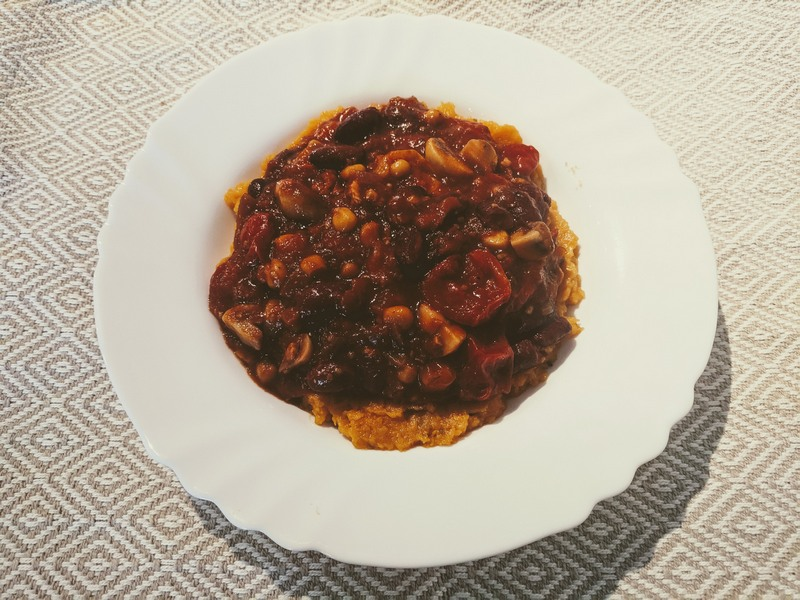

Pro velký úspěch tu mám ještě jeden recept z Veganského jídelníčku a světě div se, tentokrát si mimořádně pošmáknul i Péťa :-)! Jestli vás má něco přesvědčit o tom, že rostlinná strava nemusí být nutně fádní a bez chuti, pak je to tenhle recept. Už teď se těším, až si tuhle dobrůtku znovu uvařím!
- 2 větší batáty
- 2 lžíce rostlinného másla (dala jsem “obyč”)
- 1 menší cibule
- 150g žampionů
- 1 košíček cherry rajčat
- 6 lžic tomatového pyré
- 1 plechovka bílých máslových fazolí
- 2 stroužky česneku
- 1 lžička provensálského koření
- 1 lžička sekaného oregana
- 2 lžíce olivového oleje
- sůl a pepř dle chuti
Cibuli oloupeme, nakrájíme na drobné kostičky a zpěníme na olivovém oleji. Přidáme žampiony nakrájené na osminky a opékáme 5-8 minut.
Do pánve přimícháme tomatové pyré, které restujeme asi 1-2 minuty. Osolíme a opepříme. Přidám také pokrájená cherry rajčata, prolisovaný česnek, propláchnuté bílé fazole a provensálské koření. Dusíme několik minut. V případě potřeby podlijeme trochou zeleninového vývaru nebo bílého vína.
Omyté a oloupané batáty vaříme v osolené vodě asi 20 minut doměkka. Rozšťoucháme je na kaši a přimícháme (rostlinné) máslo a sekané oregano. Servírujeme s fazolovo-žampionovou směsí.
